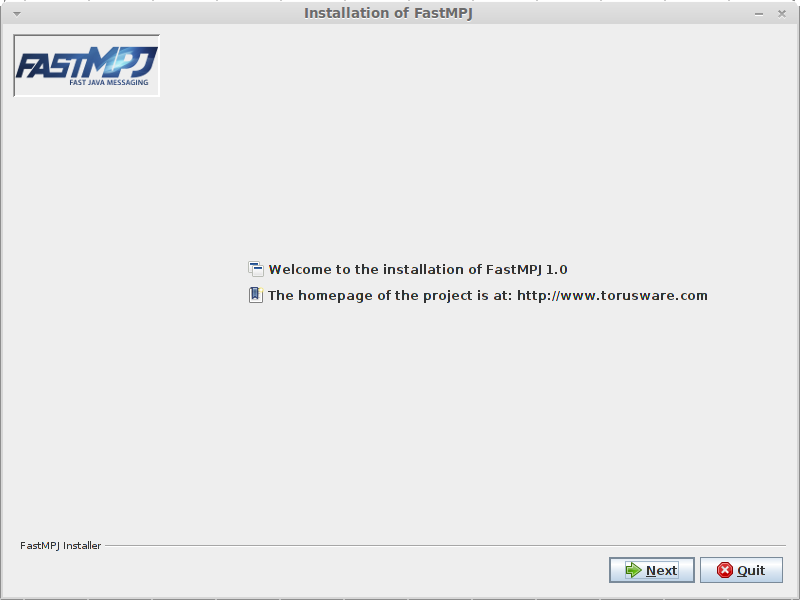
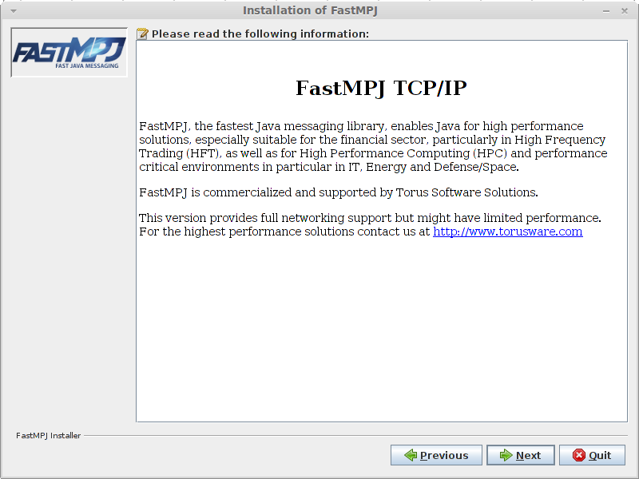
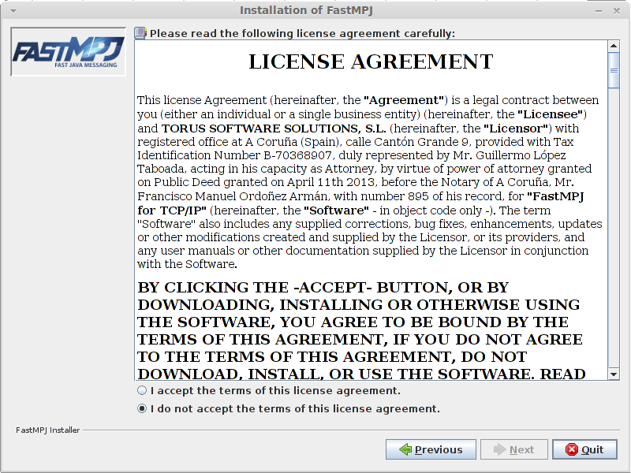
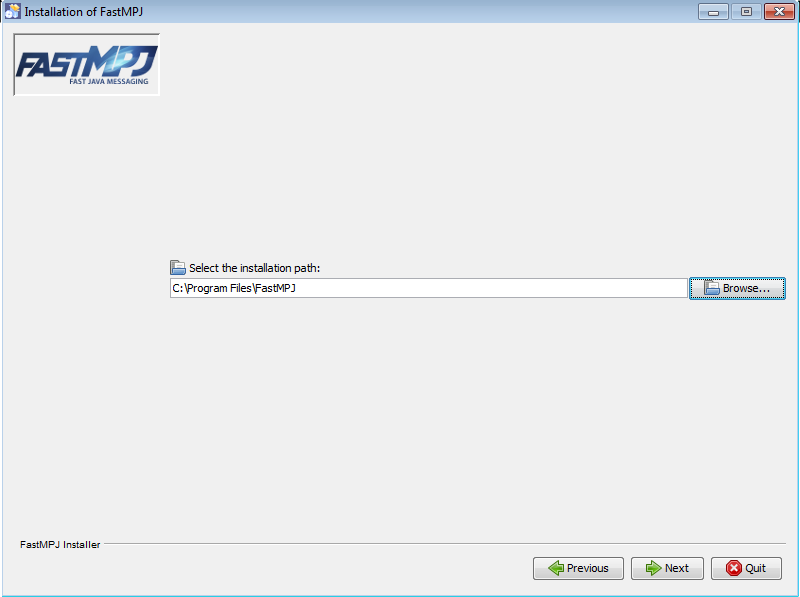
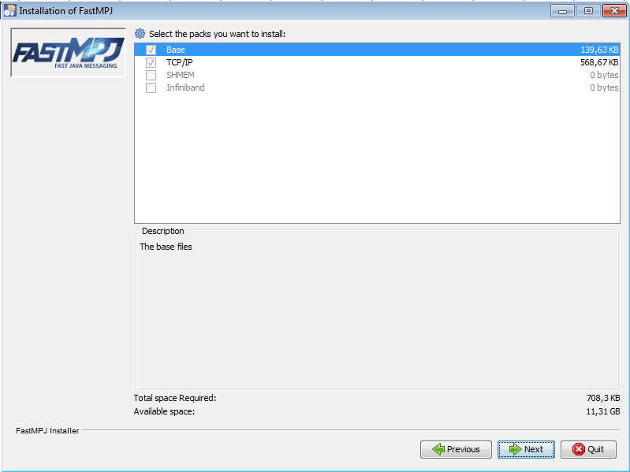
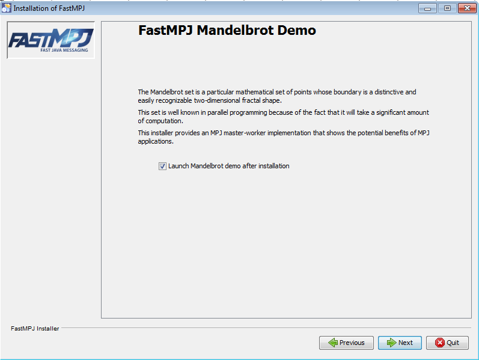
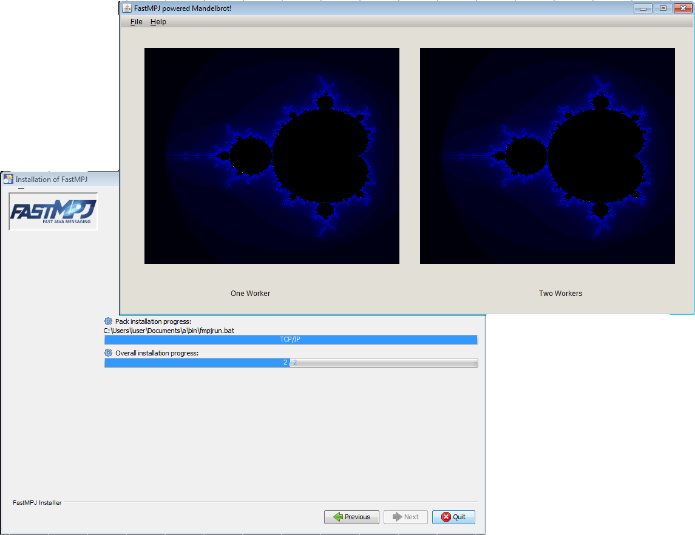
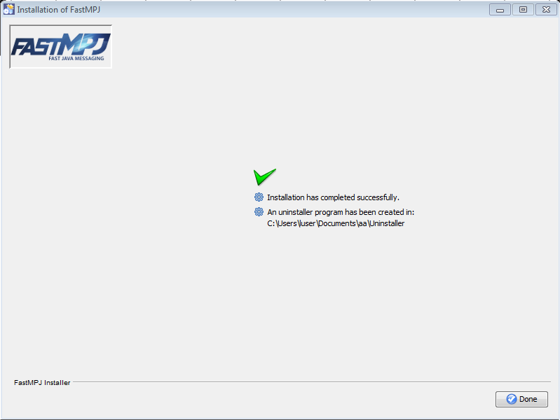
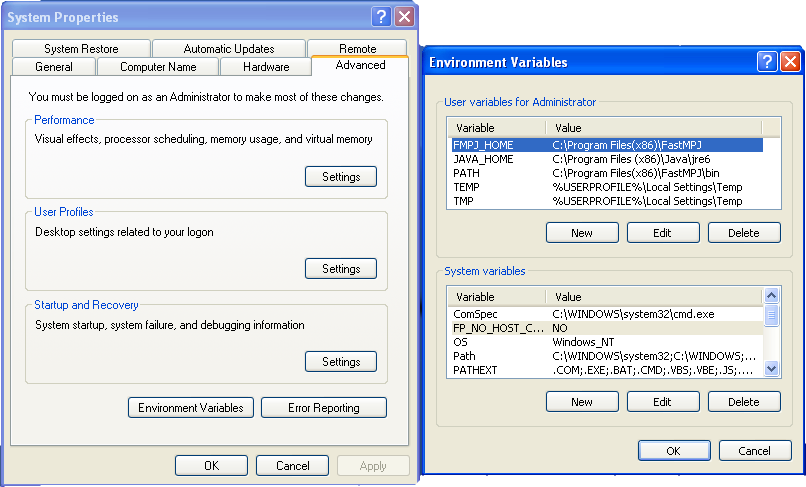

Introduction
FastMPJ, the fastest Java messaging library, enables Java for high performance solutions, especially suitable for the financial sector, particularly in High Frequency Trading (HFT), as well as for High Performance Computing (HPC) and performance critical environments in particular in IT, Energy and Defense/Space.
FastMPJ, outcome of a research project of the Computer Architecture Group of the University of Corunna, has as main objective the provision of a high performance, scalable, mature and stable solution with a friendly interface. Thanks to the Investment Fund in Science of the non-profit Fundación Barrié, FastMPJ is now being improved and available for download.
QuickStart Guide
-
Make sure you have Java 1.6 or higher version
-
Run the installer by double clicking or running the command: java -jar <installer>.jar. Depending on the installation directory, you should run the installer with admin privileges if the installation directory is not under your user home path. On windows platforms you must execute a console having administrator permissions before running the command above.
-
Set FMPJ_HOME, PATH and JAVA_HOME environmental variables
-
On UNIX/Linux/Mac you can set them in your profile or your shell configuration files, please just follow the instructions below:
export FMPJ_HOME=/path/to/fmpj/ export PATH=$FMPJ_HOME/bin:$PATH export JAVA_HOME=/path/to/java
-
On Windows systems the installer automatically sets the registry. For manual setup, please follow these instructions:
set (setx if available) FMPJ_HOME=\path\to\fmpj\ set (setx if available) PATH=%PATH%;%FMPJ_HOME%\bin set (setx if available) JAVA_HOME=\path\to\java
-
-
After the installation process you can verify the installation running the examples provided:
fmpjrun -np 2 -class examples.HelloWorld fmpjrun -np 2 -class examples.MonteCarloPi fmpjrun -np 2 -class examples.Echo
-
Compiling your own MPJ code requires including $FMPJ_HOME/lib/mpj.jar in your classpath. An example (compiling HelloWorld.java placed in $FMPJ_HOME/examples) is, on Linux platforms:
javac -cp $FMPJ_HOME/lib/mpj.jar $FMPJ_HOME/examples/HelloWorld.java
Alternatively you can use fmpjc, a command that simplifies the process:
fmpjc $FMPJ_HOME/examples/HelloWorld.java
|
Note
|
To launch the installer in console mode rather than in GUI mode (the default), you can specify one of the following parameters on the command line:
By this way, an example to launch an interactive console
installation could be: |
Install Guide
Minimum System Requirements
Please make sure that the computer on which you plan to install FastMPJ has Java 1.6 or higher version.
Installation Instructions for Windows XP/Vista/7/8
To install FastMPJ, first download the latest version from the FastMPJ project homepage: www.torusware.com.
On Windows platforms you can run the installer directly by double clicking or running the command java -jar <installer>.jar on a system console.
|
Note
|
Installation with administrator privileges
Depending on the installation directory, for example if you want do the installation under C:\Program Files directly, you must have administrator privileges on your PC. To do this, simply execute a console having administrator permissions before runnint the command above. |
|
Note
|
Other installation methods
To launch the installer in console mode rather than in GUI mode (the default), you can specify one of the following parameters on the command line:
|
Once you have run the installer, you enter the following installation steps:
-
First, you can select the installation language in this window:
-
Next, the installer shows you the welcome window with basic information, click on next to continue.
 -
Now, you can read detailed information about the project, click on next again:
 -
In this step, you must agree the license terms before continue, please read them carefully:
 -
After that, you can choose the installation directory. Please notice that you are not allowed to choose an arbitrary location unless you are running the installer with administrator privileges.
 -
Depending on the installer version, in this moment you could select the packages to install:
 -
Again, according to the installer type, you could be asked to launch a demo at the end of the installation process. The FastMPJ TCP/IP version provides an MPJ master-worker implementation for the Mandelbrot set that shows the potential benefits of MPJ applications.
 -
When you click next in the previous window, the installation process starts and, if you have choosed to launch the demo, you can see the installation progress and the demo, in this case the Mandelbrot demo.
 -
Closing the demo, the final windows appears and you can exit the installation process clicking on Done.
 -
Finally, even though the installer must do it by itself, you should check if the FMPJ_HOME and JAVA_HOME variables were set, and if the bin directory (under FMPJ_HOME) was added to the PATH.
Depending on the Windows operating system, you could proceed in a different way:
-
Windows Vista
Right click My Computer icon
Choose Properties from the context menu
Click Advanced tab (Advanced system settings link in Vista) -
Windows 7
-
Administrator users:
Select Computer from the Start menu
Choose System Properties from the context menu
Click Advanced system settings > Advanced tab -
Non administrator users:
Select Control Panel from the Start menu
Choose User Accounts
On the left side click on Change environmental variables
-
-
Windows XP
Right-click My Computer, and then click Properties.
Click the Advanced tab.
Click Environment variables.
-
For manual setup, please follow these instructions in a command window:
set (setx if available) FMPJ_HOME=\path\to\fmpj\ set (setx if available) PATH=%PATH%;%FMPJ_HOME%\bin set (setx if available) JAVA_HOME=\path\to\java
Installation Instructions for Linux/Mac
When the installation is performed on Unix based platforms, you can proceed as it would be performed on a Windows platform except in the final step, when you check the environmental variables FMPJ_HOME, JAVA_HOME and PATH.
In this case you must set them in your profile (/etc/profile or $HOME/.profile -requires logout-) or your shell configuration ($HOME/.bashrc) files, just adding the instructions below:
export FMPJ_HOME=/path/to/fmpj export PATH=$FMPJ_HOME/bin:$PATH export JAVA_HOME=/path/to/java
Additionally, if you have a version that provides Infiniband support (lower than 1.0_5), the IBVX_HOME variable should be set. This variable points to an independent library provided by the FastMPJ project. Moreover, the $IBVX_HOME/lib directory might be added to the dynamic linker search path.
export IBVX_HOME=/path/to/fmpj export LD_LIBRARY_PATH=$IBVX_HOME/lib:$LD_LIBRARY_PATH
Finally, referring again to versions with Infiniband and PSM support, the LD_PRELOAD variable should point to the libjsig.so signal-chaining library to ensure the correct working of the psmdev device. As an example, in OpenJDK implementations, you could set it like that:
export LD_PRELOAD=$JAVA_HOME/jre/lib/amd64/server/libjsig.so
|
Note
|
Commercial Versions
Please, pay attention to the special configuration features for Infiniband (ibvdev) and PSM (psmdev) devices. |
Compiling And Running Your First Application
In this section, it is shown a basic MPJ Hello World application and how to compile and run it.
First of all, the source code is presented below:
import mpi.*;
public class HelloWorld
{
public static void main(String args[]) throws Exception
{
int me,size;
args=MPI.Init(args);
me = MPI.COMM_WORLD.Rank();
size = MPI.COMM_WORLD.Size();
System.out.println(MPI.Get_processor_name()+": Hello World from "+me+" of "+size);
MPI.Finalize();
}
}
Although this is a very simple code, it satisfy the basic structure of an MPJ program:
-
Imports the mpi package.
-
Initializes the MPI environment (MPI.Init(args)).
-
Identifies each process in the communicator (MPI.COMM_WORLD.Rank()).
-
Performs the parallel computation.
-
Cleans up the MPI environment.
Now, to compile this MPJ code, you only need to include $FMPJ_HOME/lib/mpj.jar in your classpath as it is made in the following instruction:
Alternatively, you can use fmpjc, a command provided by the library that simplifies the process:
After your program is compiled, it is ready to be executed. The easy way to do that is using the fmpjrun command. An example to run the program with 22 processes in localhost could be:
You can also specify where the processes must run, for doing that write a machines file and save it as machines, stating host names or IP addresses of all machines involved in the parallel execution. An example could be:
compute-0-14.local
compute-0-15.local
And the result after running the program:
-bash-3.2$ fmpjrun -np 2 -class HelloWorld #----------------------------------------------------------- # FastMPJ Runtime: Operating System detected is Linux # FastMPJ Runtime: Starting < 2> daemons... # FastMPJ Runtime: Running < 2> daemons of < 2> #----------------------------------------------------------- #----------------------------------------------------------- # FastMPJ v1.0 b #----------------------------------------------------------- # Communication Device: <niodev> # Runtime Configuration: <CLUSTER> # Boot Daemon Method: <DEFAULT> # Number of processes: < 2> # PSL value in bytes: < 65536> #----------------------------------------------------------- # Running MPJ Application: <HelloWorld> # User specified classpath: No classpath specified #----------------------------------------------------------- compute-0-14.local: Hello World from 1 of 2 compute-0-15.local: Hello World from 0 of 2 #----------------------------------------------------------- # FastMPJ Runtime: Stopping < 2> daemons... # FastMPJ Runtime: Stopped < 1> daemons of < 2> #-----------------------------------------------------------
Running MPJ Programs
In this section the principal commands for running your programs in an MPJ environment are presented.
This guide starts explaining the fmpjrun command as the easiest way to run MPJ applications because it hides the complexity of the daemons management. Then, the rest of the daemons are explained.
fmpjrun
fmpjrun starts a FastMPJ parallel job just as the daemons involved.
|
Important
|
You can check the hostfile format of FastMPJ here. |
fmpjd
fmpjd starts a FastMPJ daemon in local machine.
fmpjdexit
fmpjdexit stops a FastMPJ daemon in local machine.
fmpjdscan
fmpjdscan shows FastMPJ daemon status (running/not running).
fmpjdboot
fmpjdboot starts a ring of FastMPJ daemons all at once.
|
Important
|
You can check the hostfile format of FastMPJ here. |
fmpjdallexit
fmpjdallexit takes down all FastMPJ daemons in ring all at once.
|
Important
|
You can check the hostfile format of FastMPJ here. |
fmpjdtrace
fmpjdtrace shows all FastMPJ daemons status (running/not running).
|
Important
|
You can check the hostfile format of FastMPJ here. |
fmpjexec
fmpjexec starts a FastMPJ parallel job.
|
Important
|
You can check the hostfile format of FastMPJ here. |
|
Caution
|
Before running fmpjexec the FastMPJ daemons must be running. Check fmpjd and fmpjdboot commands. |
fmpjdkilljobs
fmpjdkilljobs kills all FastMPJ parallel jobs.
|
Important
|
You can check the hostfile format of FastMPJ here. |
fmpjdhelp
fmpjdhelp prints information about the available commands.
The hostfile format
A hostfile is a simple file that contains the host names and, optionally, the processes per host, one per line, following the format hostname[:processes_per_host]. An example hostfile could be like the one shown below:
<hostname1>[:<processes_per_host1>] <hostname2>[:<processes_per_host2>] ...
MPJ on Clusters
Installation Advices
When the installation is performed in a supercomputer, there are 3 basic steps that every administrator knows:
-
The installation directory must be situated in a shared location. In most cases, under Linux architectures, the /opt directory could be a suitable location.
-
A custom user must perform the installation, only allowing to the conventional users to read the libraries and to execute the binaries.
-
If necessary, the application must be integrated into the batch-queuing systems as is explained in the following point. Pay special attention to the fmpjBootstrap property.
Running FastMPJ Programs Under Batch-Queuing Systems
This section shows, through examples, how to execute FastMPJ applications under different batch-queuing systems. Please read them carefully and be sure you follow the examples and that the fmpjBootstrap property, in the runtime.properties file, is set correctly.
Grid Engine / Open Grid Scheduler
The next block contains a general script for running FastMPJ applications with Grid Engine.
#!/bin/bash if [ $# -lt 2 ]; then echo "Sintaxis: $0 MPJ_PROGRAM DEVICE [PROGRAM_ARGS]" exit -1 fi PROGRAM=$1 DEVICE=$2 shift 2 $FMPJ_HOME/bin/fmpjrun -np $NSLOTS -dev $DEVICE -dmap -class $PROGRAM $@
The script only receives the java class, the device to employ, the number of processes and, optionally, the application own arguments.
The runFMPJ_ge script above could be used to run the HelloWorld example, provided by the FastMPJ library, with 2 processes and the niodev device, as follows:
|
Note
|
For the correct running with Grid Engine, you must set the fmpjBootstrap property (located in the runtime.properties file under conf in the installation directory) to auto, grid_engine or ge. Simply as follows: fmpjBootstrap=ge |
In addition, you can also use the following script in the queuing process to avoid the native engine and run FMPJ through ssh.
#!/bin/bash if [ $# -lt 2 ]; then echo "Sintaxis: $0 MPJ_PROGRAM DEVICE [PROGRAM_ARGS]" exit -1 fi PROGRAM=$1 DEVICE=$2 shift 2 HOSTFILE=$HOME/hostfile.$JOB_ID cat $PE_HOSTFILE | cut -d " " -f 1 | sort -n > $HOSTFILE $FMPJ_HOME/bin/fmpjrun -np $NSLOTS -dev $DEVICE -hostfile $HOSTFILE -dmap -class $PROGRAM $@ rm -rf $HOSTFILE >& /dev/null
|
Note
|
In this case, you should force the use of ssh setting the fmpjBootstrap to ssh, skipping the native Grid Engine. fmpjBootstrap=ssh |
Slurm
To face the execution of parallel programs under Slurm, you could use a script based in the next one:
#!/bin/bash if [ $# -lt 2 ]; then echo "Sintaxis: $0 MPJ_PROGRAM DEVICE [PROGRAM_ARGS]" exit -1 fi PROGRAM=$1 DEVICE=$2 shift 2 $FMPJ_HOME/bin/fmpjrun -np $SLURM_NTASKS -dev $DEVICE -dmap -class $PROGRAM $@
now, to queue the HelloWorld example with the ibvdev device and 2 tasks, you should type the following command:
|
Note
|
As in the Grid Engine case, for the correct running with Slurm, you should set the fmpjBootstrap property to auto or slurm. Simply as follows: fmpjBootstrap=slurm |
If you want run the MPJ program through ssh, you should use the following script for submitting jobs:
#!/bin/bash if [ $# -lt 2 ]; then echo "Sintaxis: $0 MPJ_PROGRAM DEVICE [PROGRAM_ARGS]" exit -1 fi PROGRAM=$1 DEVICE=$2 shift 2 HOSTFILE=$HOME/hostfile.$SLURM_JOB_ID scontrol show hostname $SLURM_JOB_NODELIST > $HOSTFILE $FMPJ_HOME/bin/fmpjrun -np $SLURM_NTASKS -dev $DEVICE -hostfile $HOSTFILE -dmap -class $PROGRAM $@ rm -rf $HOSTFILE >& /dev/null
|
Note
|
Beware of force the ssh use fmpjBootstrap=ssh |
LSF
|
Important
|
The LSF native support is not yet supported |
The runFMPJ_lsf_ssh script below could be used for run FMPJ with ssh support.
#!/bin/bash
#BSUB -o fastmpj_out.%J
#BSUB -e fastmpj_err.%J
#BSUB -n 2
#BSUB -R"span[ptile=1]"
#BSUB -J FastMPJ
#BSUB -t 00:01
PROGRAM=examples.HelloWorld
DEVICE=niodev
ARGS=
## You shouldn't need to change anything below this line for most runs.
HOSTFILE=$HOME/hostfile.$LSB_JOBID
NPROCS=`wc -l $LSB_DJOB_HOSTFILE|cut -f 1 -d ' '`
for i in $(sort -u $LSB_DJOB_HOSTFILE)
do
slots=0
for j in $(cat $LSB_DJOB_HOSTFILE)
do
if [ "$i" == "$j" ]; then
slots=`expr $slots + 1`
fi
done
echo "$i:$slots" >> $HOSTFILE
done
$FMPJ_HOME/bin/fmpjrun -np $NPROCS -dev $DEVICE -machinefile $HOSTFILE -dmap -class $PROGRAM $ARGS
rm -rf $HOSTFILE >& /dev/null
PBS
|
Important
|
The PBS native support is not yet supported |
The runFMPJ_pbs_ssh script below could be used for run FMPJ through ssh.
#!/bin/bash
#PBS -l mem=2gb
#PBS -l nodes=2:ppn=1
#PBS -q force-6
#PBS -N testjob
#PBS -l walltime=00:02:00
#PBS -j oe
#PBS -o test.out.$PBS_JOBID
cd $PBS_O_WORKDIR
PROGRAM=examples.HelloWorld
DEVICE=niodev
ARGS=
## You shouldn't need to change anything below this line for most runs.
NPROCS=$(wc -l < $PBS_NODEFILE)
HOSTFILE=$HOME/hosfile.$PBS_JOBID
for i in $(sort -u $PBS_NODEFILE)
do
slots=0
for j in $(cat $PBS_NODEFILE)
do
if [ "$i" == "$j" ]; then
slots=`expr $slots + 1`
fi
done
echo "$i:$slots" >> $HOSTFILE
done
$FMPJ_HOME/bin/fmpjrun -np $NPROCS -dev $DEVICE -machinefile $HOSTFILE -dmap -class $PROGRAM $ARGS
rm -rf $HOSTFILE >& /dev/null
Windows
In Windows environments you can run FMPJ through ssh or WMI.
SSH
Running FMPJ under ssh is as easy as taking the steps below to configure the environment:
-
Set the fmpjBootstratp variable in %FMPJ_HOME\conf\runtime_win.properties to ssh
-
Install and configure a ssh server/client. Beware of the ssh connection shows the Windows prompt
WMI
FMPJ also can run through WMI, taking advantage of the Windows native support, configuring the system as follows:
-
Set the fmpjBootstrap variable in %FMPJ_HOME\conf\runtime_win.properties to wmi
-
Configure WMI.
Compiling and Running FastMPJ Applications in Java IDEs
Eclipse
Since Eclipse needs all the libraries involved at code creation time in the project’s classpath for the smooth running, you might include the FastMPJ mpj.jar library.
You could do this at the Project/Properties menu and, in the box that pops up, in the Libraries tab at the Java Build Path tag. Once in this window, you could click the Add External JARs… button and add the mpj.jar library from its PATH under the FMPJ_HOME directory.
If you wish to run your programs inside the IDE, you must add a New configuration to run a Program going to the Run/External Tools/External Tools Configurations… menu. There, in the Main tab you should add the entire path of the fmpjrun.bat script (fmpjrun in Linux architectures), which is in the FMPJ_HOME under the bin directory. Apart from the before mentioned, your working directory might contain the compiled classes and your main class should be passed as argument. All this is shown in the next image, where the configuration is for running the HelloWorld example with 4 processes.
The following image shows the output of the execution, using the configuration’s example, after clicking the Run external tools icon.
Adding the Javadoc
After complete the steps above, to add Javadoc to the FastMPJ library you should open the Java Build Path page of a project again (Project/Properties/Java Build Path). On the Libraries tab expand the mpj.jar library’s node, select the Javadoc location attribute and press Edit.
Finally, you only must enter the location to the directory wich contains the Javadoc, in this case the javadoc directory under the FMPJ_HOME → doc directory.
Netbeans
As in the Eclipse case, at the code creation time you might add the mpj.jar file to the project libraries. You could do this in the window that pops up at the File/Project Properties menu, going to the Compile tab at the Libraries tag. The image below illustrates this step.
Now, when you proceed to execute your application inside the IDE’s environment, you might go to the Libraries configuration tag again, but in this case to the Run tab. There, you must add the mpj.jar and runtime.jar JAR files (placed in the FastMPJ lib directory).
Then, in the Run tag, on the left, you should create a new configuration where the main class might be runtime.FMPJRun, being in the arguments box where you pass the main class of your project and the desired FastMPJ arguments. Moreover, be sure that the working directory contains the compiled classes.
Finally, running the configuration above for the HelloWorld example, you could obtain the following output:
Adding the Javadoc
After complete the steps above, to add Javadoc to the FastMPJ library you should open the Project Properties page of a project again (File/Project Properties). On the Libraries tab click on Edit on the mpj.jar library.
Finally, on the Javadoc tab, you only must enter the location to the directory wich contains the documentation, in this case the javadoc directory under the FMPJ_HOME → doc directory.
JCreator
When you are creating your code with JCreator, you must add the jar file %FMPJ_HOME%\lib\mpj.jar to the project. This can be done at the project creation time or, once it is opened, adding the file in the Project/Project Settings… menu and clicking on the Required Libraries tab:
Reached this point, click New… and in the dialog box that pops up enter a name of your choice for the loaded library (FastMPJ in this case). Under the Classes tab, click on the Add button. Finally, in the submenu that pops-up, select Add Archive… and enter the path to mpj.jar file.
Now, it only remains to click on the checkbox next to the local library name (FastMPJ in the image) to add the jar to the current project.
If you wish to run your applications inside the IDE environment, for example, for debugging purposes, you should customize your runtime configuration in the Run/Runtime Configuration… menu. There, you might add a new configuration for the runtime in the dialog box that pops up. In the Run Application tab you must set the fmpjrun complete command path, like in the next image:
You also could set the command parameters on the Parameters tab. In the image that follows, the fmpjrun parameters are -np 4 -class $[JavaClass] for running the HelloWorld example with 4 processes.
Once the runtime configuration is customized, you are able to run your FastMPJ application inside the IDE. The following image shows the output of the example configuration with 4 processes.
MPI Java API Specification Changes
FastMPJ implements the MPI Java 1.2 API Specification, except some divergences as the next ones.
Point-to-Point Communication
Buffer allocation and usage
void MPI.Buffer_attach(BufferMPI buffer)
buffer BufferMPI object
Provides to MPI a buffer in user’s memory to be used for buffering outgoing messages. The buffer is used only by messages sent in buffered mode. Only one buffer can be attached to a process at a time.
void MPI.Buffer_detach()
Detach the buffer currently associated with MPI.
Pack and Unpack
int Comm.Pack_size(int incount, Object[] obj)
This function is added as a Special version of Pack_size for MPI.OBJECT datatype.
Collective Communication
This implementation is adapted for future MPI Java API Specifications and it consideres the collective communication operations as members of the Comm class.
Groups, Contexts and Communicators
Caching
Object Comm.Get_attr(Keyval key)
Retrieves attribute value by key. This function replaces the API Specification function:
int Comm.Attr_get(int keyval).
Retrieves attribute value by key. The call is erroneous if there is no key with value keyval. On the other hand, the call is correct if the key value exists, but no attribute is attached on comm for that key; in such case, the call returns null.
Examples and Benchmarks Provided by FastMPJ
Examples
HelloWorld
package examples;
import mpi.*;
public class HelloWorld
{
public static void main(String args[]) throws Exception
{
int me,size;
args = MPI.Init(args);
me = MPI.COMM_WORLD.Rank();
size = MPI.COMM_WORLD.Size();
System.out.println(MPI.Get_processor_name()+": Hello World from "+me+" of "+size);
MPI.Finalize();
}
}
Echo
package examples;
import mpi.*;
public class Echo
{
public Echo() {
}
public static void main(String args[]) throws Exception
{
args=MPI.Init(args);
try
{
int me = MPI.COMM_WORLD.Rank();
int size = MPI.COMM_WORLD.Size();
if(size!=2)
{
System.out.println("Run this echo with 2 processes!");
MPI.Finalize();
System.exit(1);
}
int data[]=new int[1];
if(me==0)
{
data[0]=100;
MPI.COMM_WORLD.Send(data,0,1,MPI.INT,1,10);
System.out.println("Process "+me+" sends number "+data[0]+" to Process 1");
}
else
{
MPI.COMM_WORLD.Recv(data,0,1,MPI.INT,0,10);
System.out.println("Process "+me+" receives number "+data[0]+" from Process 0");
}
} catch (MPIException e)
{
e.printStackTrace();
} finally
{
MPI.Finalize();
}
}
}
MonteCarloPi
MPJ program that uses a Monte Carlo method to compute the value of PI.
package examples;
import mpi.*;
public class MonteCarloPi
{
public static final double PI = 3.141592653589793238462643;
public static final int NUM = 2000000000;
public MonteCarloPi() {
}
public static void main(String args[]) throws Exception
{
int[] intervals = new int[1];
double[] mypi = new double[1];
double[] pi = new double[1];
long n;
double h,x;
double sum=0.0;
try
{
args=MPI.Init(args);
int me = MPI.COMM_WORLD.Rank();
int size = MPI.COMM_WORLD.Size();
intervals[0]=NUM;
if(me==0)
{
System.out.println("Pi calculation with MonterCarlo method");
System.out.println("Number of intervals (can be changed in source code): "+NUM);
System.out.println("Number of processes: "+size);
System.out.print("Calculating...");
}
MPI.COMM_WORLD.Bcast(intervals, 0, 1, MPI.INT, 0);
n = intervals[0];
h = 1.0 / (double) intervals[0];
sum = 0.0;
double start = MPI.Wtime();
for (int i = me + 1; i <= n; i += size)
{
x = h * ((double)i - 0.5);
sum += (4.0 / (1.0 + x*x));
}
mypi[0] = h * sum;
double end = MPI.Wtime();
MPI.COMM_WORLD.Reduce(mypi, 0, pi, 0, 1, MPI.DOUBLE, MPI.SUM, 0);
if(me==0)
{
System.out.println("done!");
System.out.format("Time: %f seconds\n",end-start);
System.out.format("Pi is approximately %.16f\n",pi[0]);
System.out.format("Error is %.16f\n",pi[0]-MonteCarloPi.PI);
}
}
catch (MPIException e)
{
e.printStackTrace();
}
finally
{
MPI.Finalize();
}
}
}
Benchmarks
The Java Grande Forum MPJ Benchmarks
This is a MPJ version of the Java Grande benchmark suite, which is designed for parallel execution on distributed memory multiprocessors. The benchmarks in Sections 2 and 3 are message passing versions of a subset of the corrsponding benchmarks in the sequential version. Section 1 contains some low-level message passing benchmarks.
The current benchmarks have been developed using the mpiJava 1.2 specification, which is implemented on top of native MPI libraries. This interface may be subject to future changes.
|
Note
|
These benchmarks were obtained at The Java Grande Forum MPJ Benchmarks webpage that is why the source code is not provided. |
Running JGF Benchmarks
-
You must define the "machines" file. For example, it could be: compute-0-0.local compute-0-1.local
-
To launch a specific benchmark, you only need to know its name and its section because, like that, the package would be jgf_benchmarks.section<number>. By this way, you could run the JGFPingPongBench benchmark (which is in section1) with 2 processes as follows:
NoteThe source code was modified only creating packages under jgf_benchmarks.
Available Benchmarks
The information about the benchmarks is available at the Benchmark Suite Contents
FastMPJ provides the version 1.0 which consists of the next benchmarks:
-
Section 1: Low Level Operations - measuring the performance of low level operations.
-
JGFPingPongBench: point-to-point communication.
-
JGFBarrierBench: synchronization.
-
JGFAlltoallBench: all-to-all communication.
-
JGFBcastBench: one-to-all communication.
-
JGFScatterBench: one-to-all communication.
-
JGFGatherBench: all-to-one communication.
-
JGFReduceBench: reduction.
-
JGFAll: runs the section 1 benchmarks set.
-
-
Section 2: Kernels - short codes which carry out specific operations frequently used in Grande applications.
-
JGFSeriesBenchSize[A|B|C]: Fourier coefficient analysis.
-
JGFLUFactBenchSize[A|B|C]: LU Factorization.
-
JGFSORBenchSize[A|B|C]: Successive over-relaxation.
-
JGFCryptBenchSize[A|B|C]: IDEA encryption.
-
JGFSparseBenchSize[A|B|C]: sparse matrix multiplication.
-
JGFAllSize[A|B|C]: runs the section 2 benchmarks set with a specific dataset (A, B or C).
-
-
Section 3: Large Scale Applications - larger codes, representing complete Grande applications.
-
JGFMolDynBenchSize[A|B]: molecular dynamics simulation.
-
JGFMonteCarloBenchSize[A|B]: Monte Carlo simulation.
-
JGFRayTracerBenchSize[A|B]: 3D ray tracer.
-
JGFAllSize[A|B]: runs the section 3 benchmarks set with a specific dataset (A or B).
-
Message-Passing in Java (MPJ) Benchmarks Suite
The code included in this microbenchmark suite is a java version of the Intel MPI benchmarks, available at: http://software.intel.com/en-us/articles/intel-mpi-benchmarks/.
For questions, enquiries or petitions please feel free to contact us at info@torusware.com
Running MB_MPJ Benchmarks
-
You must define the "machines" file needed for run the microbenchmarks. For example, it could be: compute-0-0.local compute-0-1.local
-
Launch the desired benchmark using the appropiate command. For example, running the PingPong benchmark with 2 processes is as easy as:
-
To see all available options run any benchmark with -help parameter:
Available Benchmarks
-
Single Transfer Benchmarks
PingPong PingPing
-
Collective Benchmarks
Allgather Allgatherv Alltoall Alltoallv Allreduce Barrier Bcast Gather Gatherv Reduce Reduce_scatter Scan Scatter Scatterv
-
Parallel Transfer Benchmarks
Exchange Sendrecv
MPI Tutorial
Introduction
As is frequently done when studying a new programming language, we begin our study of MPI with a parallel version of the ubiquitous "Hello World" program. This example illustrates the basic structure of an MPI program without any communications between processes. It is shown in Figure 1.
import mpi.*; <1>
public class HelloWorld
{
public static void main(String args[]) throws Exception
{
int me,size;
args = MPI.Init(args); <2>
me = MPI.COMM_WORLD.Rank(); <3>
size = MPI.COMM_WORLD.Size(); <4>
System.out.println(MPI.Get_processor_name()+": Hello World from " <5>
+me+" of "+size);
MPI.Finalize(); <6>
}
}
-
import mpi.*; is the package that contains the definitions and functions necessary for compiling an MPI program.
-
java.lang.String[] MPI.Init(java.lang.String[] argv) initializes the MPI execution environment, all processes must call this routine before any other MPI functions (apart from MPI_Initialized).
-
int MPI.COMM_WORLD.Rank() determines the rank (i.e., which process number am I?) of the calling process in the communicator (in this case the communicator COMM_WORLD is MPI+s shorthand for all the processes running your program).
-
int MPI.COMM_WORLD.Size() determines the size(i.e., number of processes) of the group associated with the communicator (COMM_WORLD in this case).
-
java.lang.String MPI.Get_processor_name() returns the name of the processor on which it is called.
-
void MPI.Finalize() terminates the MPI execution environment; all processes must call this routine before exiting.
MPI Datatypes
| MPI datatype | Java datatype |
|---|---|
MPI.BYTE |
byte |
MPI.CHAR |
char |
MPI.SHORT |
short |
MPI.BOOLEAN |
boolean |
MPI.INT |
int |
MPI.LONG |
long |
MPI.FLOAT |
float |
MPI.DOUBLE |
double |
MPI.OBJECT |
Object |
MPI.PACKED |
byte |
-
void Datatype.Commit()
Commit a derived datatype.
-
static Datatype Datatype.Contiguous(int count, Datatype oldtype)
Construct new datatype representing replication of old datatype into contiguous locations.
The base type of the new datatype is the same as the base type of oldtype.
-
int Datatype.Extent()
Returns the extent of a datatype.
Returns the difference between upper and lower bound.
-
void Datatype.finalize()
Destructor.
-
java.lang.String Datatype.Get_name()
Get the print name for a datatype.
-
static Datatype.Indexed(int[] array_of_blocklengths, int[] array_of_displacements, Datatype oldtype)
Construct new datatype representing replication of the old datatype into a sequence of blocks where each block can contain a different number of copies and have a different displacement.
The number of blocks is taken to be size of the array_of_blocklengths argument. The second argument, array_of_displacements, should be the same size. The base type of the new datatype is the same as the base type of oldtype.
NoteNot implemented in the current release.
-
static Datatype Datatype.Hindexed(int[] array_of_blocklengths, int[] array_of_displacements, Datatype oldtype)
Identical to Indexed except that the displacements are expressed directly in terms of the buffer index, rather than the units of the old type.
NoteUnlike other language bindings, the values in array_of_displacements are not measured in bytes.
Not implemented in the current release.
-
static Datatype Datatype.Vector(int count, int blocklength, int stride, Datatype oldtype)
Construct new datatype representing replication of old datatype into locations that consist of equally spaced blocks.
The base type of the new datatype is the same as the base type of oldtype.
NoteNot implemented in the current release.
-
static Datatype Datatype.Hvector(int count, int blocklength, int stride, Datatype oldtype)
Identical to Vector except that the stride is expressed directly in terms of the buffer index, rather than the units of the old type.
NoteUnlike other language bindings, the value of stride is not measured in bytes.
Not implemented in the current release.
-
int Datatype.Lb()
Find the lower bound of a datatype - the least value in its displacement sequence.
-
int Datatype.Ub()
Find the upper bound of a datatype - the greatest value in its displacement sequence.
-
void Datatype.Set_name(java.lang.String name)
Set datatype name.
-
int Datatype.Size()
Returns the total size of the type.
Size is defined as the total number of buffer elements incorporated by the data type, or equivalently as the length of the displacement sequence. Unlike other language bindings, the size is not measured in bytes.
-
static Datatype Datatype.Struct(int[] array_of_blocklengths, int[] array_of_displacements, Datatype[] array_of_types)
The most general type constructor.
The number of blocks is taken to be size of the array_of_blocklengths argument. The second and third arguments, array_of_displacements, and array_of_types, should be the same size. Unlike other language bindings, the values in array_of_displacements are not measured in bytes. All elements of array_of_types with definite base types must have the same base type: this will be the base type of new datatype.
NoteNot implemented in the current release.
Point-to-Point Communication
Blocking Communication
-
Status Comm.Recv(Object buf, int offset, int count, Datatype datatype, int source, int tag)
Blocking receive operation.
-
void Comm.Send(Object buf, int offset, int count, Datatype datatype, int dest, int tag)
Blocking send operation.
The actual argument associated with buf must be one-dimensional array. The value offset is a subscript in this array, defining the position of the first item of the message.
If the datatype argument represents an MPI basic type, its value must agree with the element type of buf---either a primitive type or class type (object). If the datatype argument represents an MPI derived type, its base type must agree with the element type of buf.
If a data type has MPI.OBJECT as its base type, the objects in the buffer will be transparently serialized and unserialized inside the communication operations.
The Status Object is made of the following fields and methods:
-
int Status.index
-
int Status.numObj
-
int Status.source
-
int Status.tag
-
int Status.Get_count(Datatype datatype)
Gets the number of "top level" elements.
-
int Status.Get_elements(Datatype datatype)
Retrieve number of basic elements from status.
Communication Modes
-
void Comm.Bsend(Object buf, int offset, int count, Datatype datatype, int dest, int tag)
Send in buffered mode. This operation copies message into a buffer specified by MPI.Buffer_attach operation, and then sends using the standard mode of communication. Further comments as for Send.
-
void Comm.Ssend(Object buf, int offset, int count, Datatype datatype, int dest, int tag)
Send in synchronous mode.
-
void Comm.Rsend(Object buf, int offset, int count, Datatype datatype, int dest, int tag)
Send in ready mode.
Buffer Allocation and Usage
-
static void MPI.Buffer_attach(BufferMPI buffer)
Attaches a user-provided buffer for sending.
Provides to MPI a buffer in user’s memory to be used for buffering outgoing messages. The buffer is used only by messages sent in buffered mode. Only one buffer can be attached to a process at a time.
-
static void MPI.Buffer_detach()
Detach the buffer currently associated with MPI.
-
public BufferMPI(int count, Datatype datatype)
This constructor should be called to create a new BufferMPI Object.
Nonblocking Communication
-
Request Comm.Isend(Object buf, int offset, int count, Datatype datatype, int dest, int tag)
Start a standard mode, nonblocking send.
-
Request Comm.Ibsend(Object buf, int offset, int count, Datatype datatype, int dest, int tag)
Start a buffered mode, nonblocking send.
-
Request Comm.Issend(Object buf, int offset, int count, Datatype datatype, int dest, int tag)
Start a synchronous mode, nonblocking send.
-
Request Comm.Irsend(Object buf, int offset, int count, Datatype datatype, int dest, int tag)
Start a ready mode, nonblocking send.
-
Request Comm.Irecv(Object buf, int offset, int count, Datatype datatype, int source, int tag)
Start a nonblocking receive.
The following methods are used to complete nonblocking communication operations (and also communications started using the persistent communication requests).
-
Status Request.Wait()
Waits for a request to complete.
Blocks until the operation identified by the request is complete. After the call returns, the request object becomes inactive.
-
Status Request.Test()
Tests for the completion of a request.
Returns a status object if the operation identified by the request is complete, or a null reference otherwise. After the call, if the operation is complete (ie, if the return value is non-null), the request object becomes an inactive request.
-
boolean Request.Is_null()
Test if request object is void.
NoteThis funcion returns always false on instances of the subclass Prequest.
-
void Request.Free()
Set the request object to be void.
-
static Status Request.Waitany(Request[] array_of_requests)
Blocks until one of the operations associated with the active requests in the array has completed.
The index in array_of_requests for the request that completed can be obtained from the returned status object through the Status.index field. The corresponding element of array_of_requests becomes inactive. The array of requests may contain inactive requests. If the list contains no active requests, the method immediately returns a status in which the index field is MPI.UNDEFINED.
-
Status Request.Testany(Request[] array_of_requests)
Tests for completion of either one or none of the operations associated with active requests.
If some request completed, the index in array_of_requests for that request can be obtained from the returned status object through the Status.index field. The corresponding element of array_of_requests becomes inactive. If no request completed, Testany returns a null reference.
-
static Status[] Request.Waitall(Request[] array_of_requests)
Blocks until all of the operations associated with the active requests in the array have completed.
The result array will be the same size as array_of_requests. On exit, requests become inactive. If the input value of arrayOfRequests contains any inactive requests, corresponding elements of the result array will contain null status references.
-
static Status[] Request.Testall(Request[] array_of_requests)
Tests for completion of all of the operations associated with active requests.
If all operations have completed, the exit values of the argument array and the result array are as for Waitall. If any operation has not completed, the result value is null and no element of the argument array is modified.
-
static Status[] Request.Waitsome(Request[] array_of_requests)
Blocks until at least one of the operations associated with the active requests in the array has completed.
The size of the result array will be the number of operations that completed. The index in array_of_requests for each request that completed can be obtained from the index field of the returned status object. The corresponding element in array_of_requests becomes inactive.
If array of requests list contains no active requests, Waitsome immediately returns a null reference.
-
static Status[] Request.Testsome(Request[] array_of_requests)
Behaves like Waitsome, except that it returns immediately.
If no operation has completed, TestSome returns an array of length zero and elements of array_of_requests are unchanged. Otherwise, arguments and return value are as for Waitsome.
-
Status Request.Get_status()
Non-desctructive test for the completion of a request.
NoteUnlike Test, the request object does not becomes inactive.
Probe and Cancel
-
Status Comm.Iprobe(int source, int tag)
Check if there is an incoming message matching the pattern specified.
If such a message is currently available, a status object similar to the return value of a matching Recv operation is returned. Otherwise a null reference is returned.
-
Status Comm.Probe(int source, int tag)
Wait until there is an incoming message matching the pattern specified.
Returns a Status object similar to the return value of a matching Recv operation.
-
void Request.Cancel()
Mark a pending nonblocking communication for cancellation.
NoteNot implemented in the current release.
-
boolean Status.Test_cancelled()
Test if communication was cancelled.
Persistent communication requests
-
Prequest Comm.Send_init(Object buf, int offset, int count, Datatype datatype, int dest, int tag)
Creates a persistent communication request for a standard mode send.
-
Prequest Comm.Bsend_init(Object buf, int offset, int count, Datatype datatype, int dest, int tag)
Creates a persistent communication request for a buffered mode send.
-
Prequest Comm.Ssend_init(Object buf, int offset, int count, Datatype datatype, int dest, int tag)
Creates a persistent communication request for a synchronous mode send.
-
Prequest Comm.Rsend_init(Object buf, int offset, int count, Datatype datatype, int dest, int tag)
Creates a persistent communication request for a ready mode send.
-
Prequest Comm.Recv_init(Object buf, int offset, int count, Datatype datatype, int source, int tag)
Creates a persistent communication request for a receive operation.
-
void Prequest.Start()
Activate a persistent communication request.
-
static void Prequest.Startall(Prequest[] prequests)
Activate a list of communication requests.
|
Note
|
A communication started with a call to Start or Startall is completed by a call to Request.Wait, Request.Test, or one of the derived functions. On successful completion the request becomes inactive again. It can be reactivated by a further call to Start. |
Send-receive
-
Status Comm.Sendrecv(Object sendbuf, int sendoffset, int sendcount, Datatype sendtype, int dest, int sendtag, Object recvbuf, int recvoffset, int recvcount, Datatype recvtype, int source, int recvtag)
Execute a blocking send and receive operation.
-
Status Comm.Sendrecv_replace(Object buf, int offset, int count, Datatype datatype, int dest, int sendtag, int source, int recvtag)
Execute a blocking send and receive operation, receiving message into send buffer.
Packed Data Management
-
int Comm.Pack_size(int incount, Datatype datatype)
Returns an upper bound on the increment of position effected by Pack.
NoteIt is an error to call this function if the base type of datatype is MPI.OBJECT (FastMPJ provides Pack_size(int,Object[]) method instead) or MPI.PACKED (not sense).
-
int Comm.Pack_size(int incount, Object[] obj)
Special version of Pack_size for MPI.OBJECT datatype.
-
int Comm.Pack(Object inbuf, int offset, int incount, Datatype datatype, byte[] outbuf, int position)
Packs message in send buffer inbuf into space specified in outbuf.
The return value is the output value of position - the inital value incremented by the number of bytes written.
-
int Comm.Unpack(byte[] inbuf, int position, Object outbuf, int offset, int outcount, Datatype datatype)
Unpacks message in receive buffer outbuf into space specified in inbuf.
The return value is the output value of position - the inital value incremented by the number of bytes read.
Collective Communication Routines
Synchronization
Processes wait until all members of the group have reached the synchronization point.
-
void Comm.Barrier()
A call to Barrier blocks the caller until all processes in the group have called it. The call returns at any process only after all group members have entered the call. This function can be used when a synchronization of all processes is needed.
Data Movement
-
void Comm.Bcast(java.lang.Object buf, int offset, int count, Datatype datatype, int root)
Broadcast a message from the process with rank root to all processes of the group, itself included. It is called by all members of group using the same arguments. On return, the contents of root’s communication buffer have been copied to all processes. The type signature of count, datatype on any process must be equal to the type signature of count, datatype at the root.
-
void Comm.Gather(java.lang.Object sendbuf, int sendoffset, int sendcount, Datatype sendtype, java.lang.Object recvbuf, int recvoffset, int recvcount, Datatype recvtype, int root)
Each process (root process included) sends the contents of its send buffer to the root process, which receives these contents in its recvbuf. The messages are concatenated in rank order. The type signature of sendcount, sendtype on any process must be equal to the type signature of recvcounts, recvtype at the root.
-
void Comm.Allgather(java.lang.Object sendbuf, int sendoffset, int sendcount, Datatype sendtype, java.lang.Object recvbuf, int recvoffset, int recvcount, Datatype recvtype)
Similar to Gather, but all processes receive the result. The block of data sent from the process jth is received by every process and placed in the jth block of the buffer recvbuf. The type signature associated with sendcount, sendtype, at a process must be equal to the type signature associated with recvcount, recvtype at any other process.
-
void Comm.Alltoall(java.lang.Object sendbuf, int sendoffset, int sendcount, Datatype sendtype, java.lang.Object recvbuf, int recvoffset, int recvcount, Datatype recvtype)
Extension of Allgather to the case where each process sends distinct data to each of the receivers. The jth block sent from process i is received by process j and is placed in the ith block of recvbuf. The type signature associated with sendcount, sendtype, at a process must be equal to the type signature associated with recvcount, recvtype at any other process.
-
void Comm.Alltoallv(java.lang.Object sendbuf, int sendoffset, int[] sendcount, int[] sdispls, Datatype sendtype, java.lang.Object recvbuf, int recvoffset, int[] recvcount, int[] rdispls, Datatype recvtype)
Adds flexibility to Alltoall: location of data for send is specified by sdispls and location to place data on receive side is specified by rdispls. The jth block sent from process i is received by process j and is placed in the ith block of recvbuf. These blocks need not all have the same size. The type signature associated with sendcount[j], sendtype at process i must be equal to the type signature associated with recvcounts[i], recvtype at process j.
-
void Comm.Gatherv(java.lang.Object sendbuf, int sendoffset, int sendcount, Datatype sendtype, java.lang.Object recvbuf, int recvoffset, int[] recvcount, int[] displs, Datatype recvtype, int root)
Extend the functionality of Gather by allowing varying counts of data from each process. It also allows more flexibility as to where the data is placed on the root, by providing the new argument, displs. Messages are placed in the receive buffer of the root process in rank order.
The size of arrays recvcounts and displs should be the size of the group. Entry i of displs specifies the displacement relative to element recvoffset of recvbuf at which to place incoming data. sendtype and recvtype must be the same.
-
void Comm.Allgatherv(java.lang.Object sendbuf, int sendoffset, int sendcount, Datatype sendtype, java.lang.Object recvbuf, int recvoffset, int[] recvcount, int[] displs, Datatype recvtype)
Similar to Gatherv, but all processes receive the result. The block of data sent from jth process is received by every process and placed in the jth block of the buffer recvbuf. These blocks need not all be the same size. The type signature associated with sendcount, sendtype, at process j must be equal to the type signature associated with recvcounts[j], recvtype at any other process.
-
void Comm.Scatter(java.lang.Object sendbuf, int sendoffset, int sendcount, Datatype sendtype, java.lang.Object recvbuf, int recvoffset, int recvcount, Datatype recvtype, int root)
Inverse of the operation Gather. It is similar to Bcast but any process receives different data. The root sends a message which is split into n equal segments and the ith segment is received by the ith process in the group. The type signature associated with sendcount, sendtype at the root must be equal to the type signature associated with recvcount, recvtype at all processes. The argument root must have identical values on all processes.
-
void Comm.Scatterv(java.lang.Object sendbuf, int sendoffset, int[] sendcount, int[] displs, Datatype sendtype, java.lang.Object recvbuf, int recvoffset, int recvcount, Datatype recvtype, int root)
Inverse of the operation Gatherv. It extends the operation Scatter by allowing sending different MPIUtil.counts of data to each process, since sendcount is now an array. It also allows more flexibility as to where the data is taken from on the root, by providing the new argument, displs. The type signature implied by sendcount[i], sendtype at the root must be equal to the type signature implied by recvcount, recvtype at process i.
Collective Computation
One member of the group collects data from the other members and performs an operation (min, max, add, multiply, etc.) on the data.
-
void Comm.Allreduce(java.lang.Object sendbuf, int sendoffset, java.lang.Object recvbuf, int recvoffset, int count, Datatype datatype, Op op)
Same as Reduce except that the result appears in the receive buffer of all processes in the group. All processes must receive identical results.
-
void Comm.Reduce_scatter(java.lang.Object sendbuf, int sendoffset, java.lang.Object recvbuf, int recvoffset, int[] recvcounts, Datatype datatype, Op op)
Combine elements in input buffer of each process using the reduce operation, and scatter the combined values over the output buffers of the processes. The ith segment in result vector is sent to process i and stored in the receive buffer defined by recvbuf, recvcounts[i] and datatype.
-
void Comm.Reduce(java.lang.Object sendbuf, int sendoffset, java.lang.Object recvbuf, int recvoffset, int count, Datatype datatype, Op op, int root)
Combine elements in input buffer of each process using the reduce operation, and return the combined value in the output buffer of the root process. Arguments count, datatype, op and root must be the same in all processes. Input and output buffers have the same length and elements of the same type. Each process can provide one element, or a sequence of elements, in which case the combine operation is executed element-wise on each entry of the sequence.
op can be a predefined operation or an user-defined operation. The predefined operations are available in Java as MPI.MAX, MPI.MIN, MPI.SUM, MPI.PROD, MPI.LAND, MPI.BAND, MPI.LOR, MPI.BOR, MPI.LXOR, MPI.BXOR, MPI.MINLOC and MPI.MAXLOC. The operation is always assumed to be associative. The datatype must be compatible with op.
-
void Comm.Scan(java.lang.Object sendbuf, int sendoffset, java.lang.Object recvbuf, int recvoffset, int count, Datatype datatype, Op op)
Perform a prefix reduction on data distributed across the group. The operation returns, in the recvbuf of the process with rank i, the reduction of the values in the send buffers of processes with ranks 0,…,i (inclusive). Operations supported, semantics and constraints of arguments are as for Reduce.
User Op
-
public Op(User_Function function, boolean commute)
Bind a user-defined global reduction operation to an Op object.
To define a new operation, the programmer should define a concrete subclass of User_function, implementing the Call method, then pass an object from this class to the Op constructor.
-
void User_Function.Call(java.lang.Object invec, int inoffset, java.lang.Object inoutvec, int inoutoffset, int count, Datatype datatype)
User-defined function for a new Op.
|
Note
|
These collectives are not implemented for Intercomm in the current release. |
Groups, Contexts and Communicators
Group Management
-
int Group.Size()
Returns the size of the group.
-
int Group.Rank()
Returns the rank of the calling process in the group.
-
static int [] Group.Translate_ranks(Group group1, int[] ranks1, Group group2)
Translate ranks within first group to ranks within second group.
-
static int Group.Compare(Group group1, Group group2)
Compare two groups.
NoteMPI.IDENT results if the group members and group order are exactly the same in both groups. MPI.SIMILAR results if the group members are the same but the order is different. MPI.UNEQUAL results otherwise.
-
Group Comm.Group
Return group associated with a communicator.
-
static Group Group.Union(Group group1, Group group2)
Set union of two groups.
Produces a group by combining the two input groups.
-
static Group Group.Intersection(Group group1, Group group2)
Set intersection of two groups.
The output group contains those processes that are in both group1 and group2.
-
static Group Group.Difference(Group group1, Group group2)
Makes a group from the difference of two groups.
Result contains all elements of the first group that are not in the second group.
-
Group Group.Incl(int [] ranks)
Create a subset group including specified processes.
This method returns a new group object including all the ranks specified in the argument array. Each item of the argument array should be a valid rank in the calling group. The total number of items in argument array should not be more than the size of the existing group. This method is a local operation.
-
Group Group.Excl(int[] ranks)
Create a subset group excluding specified processes.
This method returns a new group object excluding all the ranks specified in the argument array. Each item of the argument array should be a valid rank in the calling group. The total number of items in argument array should not be more than the size of the existing group. This method is a local operation.
-
Group Group.Range_incl(int[][] ranges)
Create a subset group including processes specified by strided intervals of ranks.
The triplets are of the form (first rank, last rank, stride) indicating ranks in this group to be included in the new group. The size of the first dimension of ranges is the number of triplets. The size of the second dimension is 3.
-
Group Group.Range_excl(int[][] ranges)
Create a subset group excluding processes speci ed by strided intervals of ranks.
Triplet array is defined as for Range_incl, the ranges indicating ranks in this group to be excluded from the new group.
-
void Group.finalize()
Destroy the calling group.
Communicator Management
-
int Comm.Size()
Size of group of the communicator.
-
int Comm.Rank()
Rank of this process in group of this communicator.
-
static int Comm.Compare(Comm comm1, Comm comm2)
Compare two communicators.
-
Object Comm.clone()
Duplicate the communicator.
-
Intracomm Intracomm.Create(Group group)
Creates a new communicator.
This method creates a new communicator with communication group defined by group and a new context. The call is erroneous if group is not a subset of the group associated with this intra-communicator. This method returns MPI.COMM_NULL to processes that are not in group. Note that the call is to be executed by all processes in this intra-communicator, even if they do not belong to the new group. This call applies only to intra-communicators.
-
Intracomm Intracomm.Split(int color, int key)
Partition the group associated with this communicator and create a new communicator within each subgroup.
This function partitions the group associated with this communicator into disjoint subgroups, one for each value of color. Each subgroup contains all processes of the same color. Within each subgroup, the processes are ranked in the order defined by the value of the argument key, with ties broken according to their rank in the old group. A new communicator is created for each subgroup and returned. A process may supply the color value MPI.UNDEFINED, in which case this method returns MPI.COMM_NULL. The value of color must be nonnegative. This call applies only to intra-communicators.
-
Comm.Free()
Destroy this communicator.
An explicitly called Free method is required rather than an implicitly called finalize method, because MPI_COMM_FREE is a collective operation. We cannot assume that the Java garbage collector will call a finalize method synchronously on all processors. boolean Comm.Is_null()
-
void Comm.Set_name(String name)
Sets the print name for a communicator.
-
void Comm.Set_attr(Keyval key, Object attribute_val)
Stores attribute value associated with a key.
If the value is already present, then the outcome is as if Comm.Delete_attr() was first called to delete the previous value, and a new value was next stored.
-
String Comm.Get_name()
Return the print name from the communicator.
The three predefined communicators will have predefined names associated with them. Thus, the names of MPI.COMM_WORLD, MPI.COMM_SELF and MPI.COMM_NULL will have the default of MPI.COMM_WORLD, MPI.COMM_SELF and MPI.COMM_NULL.
-
void Comm.Delete_attr(Keyval key)
Deletes an attribute value associated with a key on a communicator.
Inter-Communication
-
boolean Comm.Test_inter()
Test if this communicator is an inter-communicator.
-
int Intercomm.Remote_size()
Determines the size of the remote group associated with an inter-communicator.
-
Group Intercomm.Remote_Group()
Return the remote group.
-
Intercomm Comm.Create_intercomm Comm.Create_intercomm(Comm local_intracomm, int local_leader, int remote_leader, int tag)
Creates an inter-communicator from two intra-communicators. This operation is defined as a method on the "peer intra-communicator", making it analogous to a Send or Recv communication with the remote group leader. The MPI 1.2 standard contains two mutually exclusive comments on the input intra-communicators. One says that their respective groups must be disjoint; the other that the leaders can be the same process.
-
Intracomm Intercomm.Merge(boolean high)
Creates an intra-communicator from the union of the two groups in this inter-communicator.
The high argument is used to order the groups when creating the new intra-communicator. All processes should provide the same high value within each of the two groups. If processes in one group provided the value high = false and processes in the other group provided the value high = true then the union orders the "low" group before the "high" group. If all processes provided the same high argument then the order of the union is arbitrary. This call is blocking and collective within the union of the two groups.
Caching
-
Object Comm.Get_attr(Keyval key)
Retrieves attribute value by key.
Retrieves attribute value by key. The call is erroneous if there is no key with value keyval. On the other hand, the call is correct if the key value exists, but no attribute is attached on comm for that key; in such case, the call returns null.
Topologies
Topology Constructors
-
Cartcomm Intracomm.Create_cart(int[] dims, boolean[] periods, boolean reorder)
Create a Cartesian topology communicator whose group is a subset of the group of this communicator.
The number of dimensions of the Cartesian grid is taken to be the size of the dims argument. The array periods must be the same size.
-
static void Cartcomm.Dims_create(int nnodes, int[] dims)
Select a balanced distribution of processes per coordinate direction.
The number of dimensions is taken to be size of the dims argument. The caller may further constrain the operation of this method by specifying elements of array dims. If dims[i] is set to a positive number, this method will not modify the number of nodes in dimension i; only those entries where dims[i] = 0 are modified by the call. Negative input values of dims[i] are erroneous. For dims[i] set by the call, dims[i] will be ordered in non-increasing order. Note that dims is an inout parameter.
-
Graphcomm Intracomm.Create_graph(int[] index, int[] edges, boolean reorder)
Create a graph topology communicator whose group is a subset of the group of this communicator.
The number of nodes in the graph, nnodes, is taken to be size of the index argument. The size of array edges must be index[nnodes - 1].
-
int Comm.Topo_test()
Returns the type of topology associated with the communicator.
The return value will be one of MPI.GRAPH, MPI.CART or MPI.UNDEFINED.
-
GraphParms Graphcomm.Get()
Returns graph topology information.
The number of nodes and number of edges can be extracted from the sizes of the index and edges fields of the returned object.
-
CartParms Cartcomm.Get()
Returns Cartesian topology information.
The number of dimensions can be obtained from the size of (eg) dims field of the returned object.
-
int Cartcomm.Rank(int [] coords)
Translate logical process coordinates to process rank.
-
int [] Cartcomm.Coords(int rank)
Translate process rank to logical process coordinates.
-
int [] Graphcomm.Neighbours(int rank)
Provides adjacency information for general graph topology.
The number of neighbours can be extracted from the size of the result.
-
ShiftParms Cartcomm.Shift(int direction, int disp)
Compute source and destination ranks for "shift" communication.
The direction argument indicates the dimension of the shift, i.e., the coordinate which value is modified by the shift. Depending on the periodicity of the cartesian group in the specified coordinate direction, Shift provides the identifiers for a circular or an end-off shift. In the case of an end-off shift, the value MPI.PROC_NULL may be returned in the fields rankSource or rankDest of the returned ShiftParms object, indicating that the source or the destination for the shift is out of range.
-
Cartcomm Cartcomm.Sub(boolean[] remainDims)
Partition Cartesian communicator into subgroups of lower dimension.
This method can be used to partition the communicator group into subgroups that form lower-dimensional cartesian subgrids, and to build for each subgroup a communicator with the associated subgrid cartesian topology.
-
int Cartcomm.Map(int[] dims, boolean[] periods)
Compute an optimal placement.
The number of dimensions is taken to be size of the dims argument.
-
int Graphcomm.Map(int[] index, int[] edges)
Compute an optimal placement.
The number of nodes is taken to be size of the index argument.
MPI Environmental Management
Implementation information
-
static String MPI.Get_processor_name()
Returns the name of the processor on which it is called.
Error handling
-
static void Comm.Errorhandler_set(Errhandler errhandler)
Associates a new error handler with communicator at the calling process.
NoteNot implemented in the current release.
-
static Errhandler Comm.Errorhandler_get()
Returns the error handler currently associated with the communicator.
NoteNot implemented in the current release.
Timers
-
static double MPI.Wtime()
Returns wallclock time.
If the attribute MPI.WTIME_IS_GLOBAL is defined and true, then the value is synchronized across all processes in MPI.COMM_WORLD.
-
static double MPI.Wtick()
Returns the resolution of MPI.Wtime.
Startup
-
static String MPI.Init(String[] argv)
Initialize the MPI execution environment.
-
static void MPI.Finalize()
Terminates MPI execution environment.
-
static boolean MPI.Initialized()
Indicates whether MPI.Init has been called.
This routine may be used to determine whether MPI.INIT has been called. It is the only MPI’s routine that may be called before MPI.INIT is called.
-
static boolean MPI.Finalized()
Indicates whether MPI.Finalize has been called.
This routine returns true if MPI.FINALIZE has completed. It is legal to call MPI.FINALIZED before MPI.INIT and after MPI.FINALIZE.
-
void Comm.Abort(int errorcode)
Abort MPI.
NoteThe MPI standard says: the process calling MPI_Abort must be a member of the communicator passed in. If the communicator is invalid or the process is not a member of the communicator, MPI_Abort is called on MPI_COMM_WORLD.